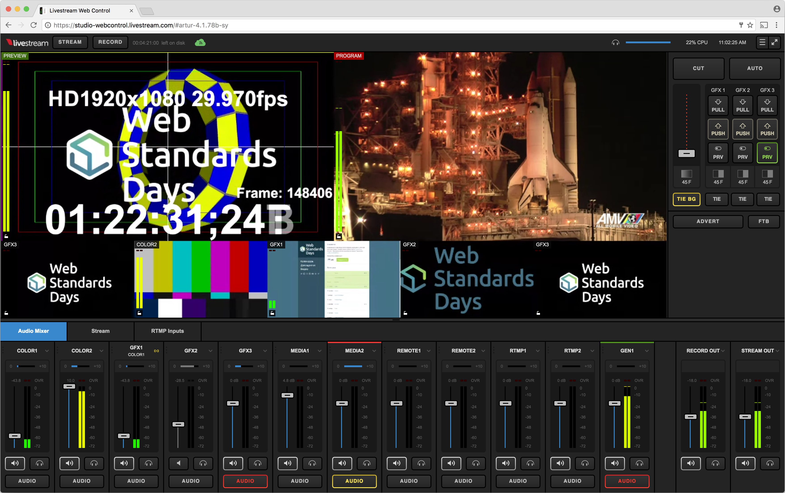
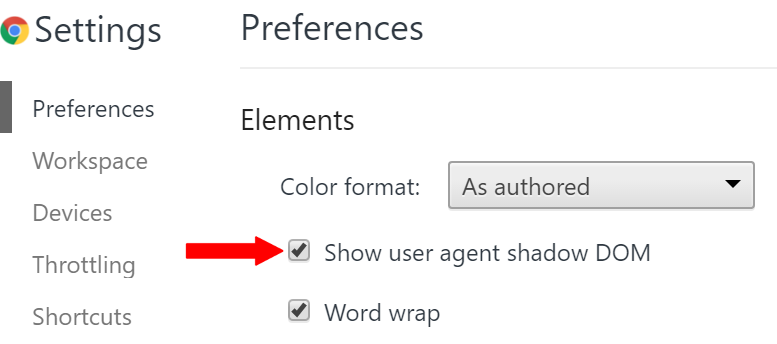
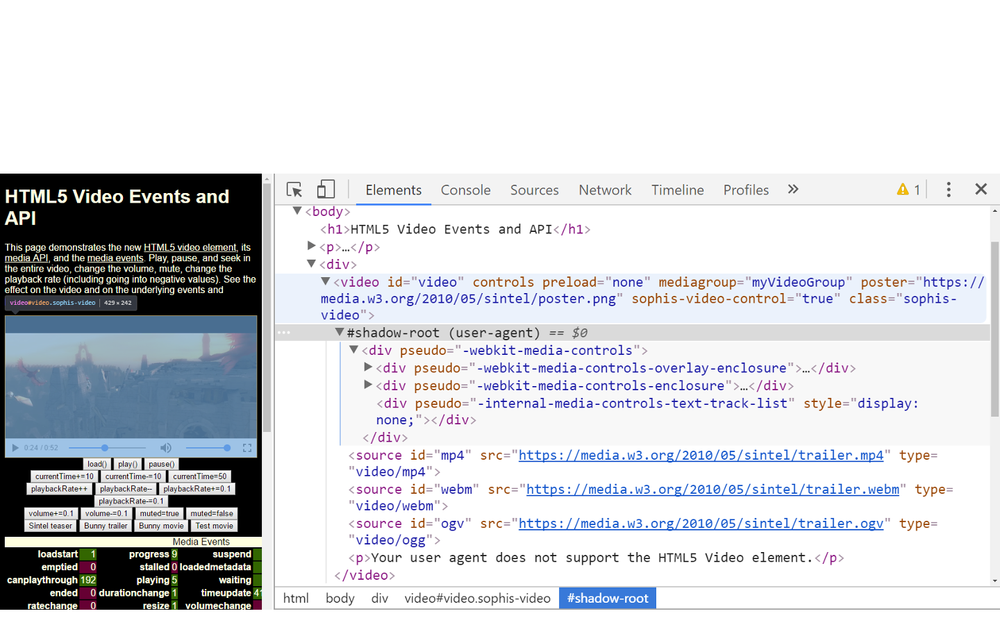
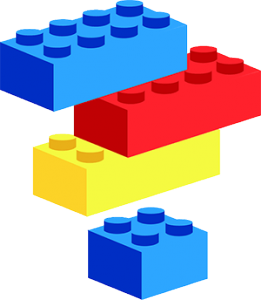
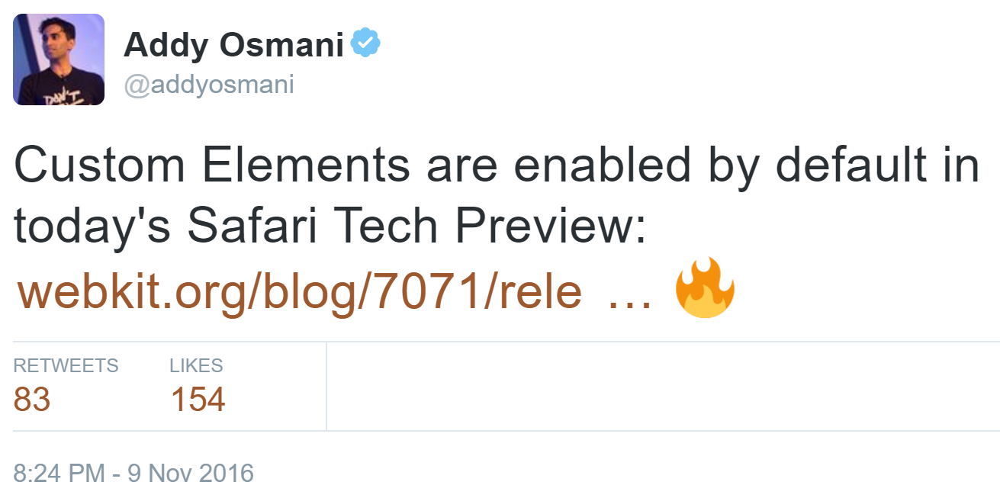
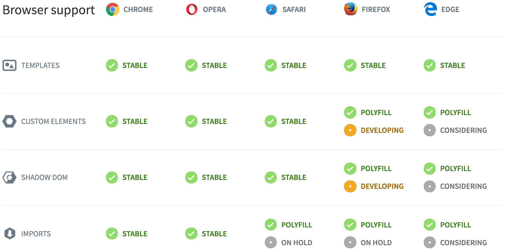
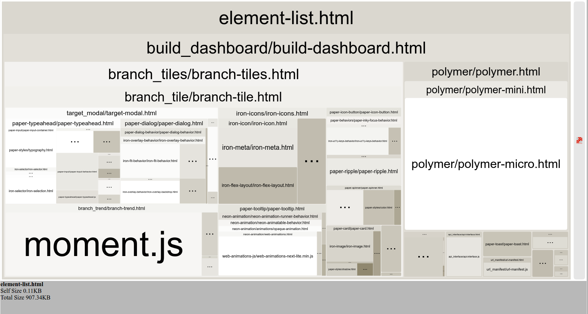

Polymer, год вместе
@arturparkhisenko
Polymer
Год вместе
arturparkhisenko
2016-11-26, Kyiv

Наша миссия
Мы обеспечиваем онлайн-трансляции
Мы сближаем тебя с окружающими, превращая каждое событие в бесценный опыт
Проект Livestream Studio Webсontrol
Часть Livestream Studio, позволяющая управлять приложением с помощью веб-браузера из любой точки мира
Используя WebRTC
Проект Livestream Studio Webсontrol

Как увидеть внутренности веб компонентов?

Под "капотом" у тега <video>

Веб-компоненты
Это возможность создавать пользовательские, инкапсулируемые, переиспользуемые компоненты, использующие веб-платформу.
В основе веб-компонентов лежат эти спецификации:
- Shadow Dom - Теневой DOM
- CSS Scoping - Стилизация Теневого DOM
- HTML Imports - Импорт HTML
- HTML Templates - Шаблоны
- Custom Elements - Пользовательские элементы

Кросс браузерные Веб-Компоненты
уже здесь👍

Поддержка браузерами

webcomponents.js для: IE 11+, Safari 9+
Source: webcomponents.org
Проект и библиотека Polymer
Используйте веб-платформу, чтобы сделать веб лучше
Проект Polymer - это набор библиотек и утилит для
веб-разработчиков.
Библиотека Polymer создана для того, чтобы упростить работу с нативными API веб-платформы.
Polymer утилиты
Polymer App Toolbox - это коллекция готовых веб-компонентов, утилит и шаблонов для создания
Прогрессивных Веб Приложений с библиотекой Polymer
(роутинг, локализация, хранилище, лэйауты, polygit-cdn).
Отдельные утилиты: polymer-analyzer/build/linter/project-config/bundler, polyserve, Web Component Tester.
Polymer утилиты
Polymer-cli - консольная утилита, которая включает в себя инструменты сборки, генерации, линтер, сервер для разработки и платформу для тестирования.
Кто использует Polymer?

Polymer подход
- Использование нативных API
- Декларативный путь передачи данных
- Синхронизация атрибутов и свойств
- Меньше шаблонного кода
Сравнение с конкурентами
Polymer v1 (53kb min+gzip) больше всех по размеру, v2 (10kb)
 SkateJS
SkateJS
Incremental DOM (from Google), JS импорт вместо HTML импорта, живой проект (5kb), (есть SSR)
X-tag и  Bosonic - Являются заброшенными :/
Bosonic - Являются заброшенными :/


 и т.д. не используют Web Components APIs,
и т.д. не используют Web Components APIs,
но можно использовать компоненты в них и их внутри компонентов.
Слабые стороны Polymer v1.Х (ES5)
- Низкая производительность, из-за полифилов
- "Сырые" утилиты
- Нет способа подключения внешних файлов стилей
- Много запросов без бандлинга (http2 поможет)
- Observers вызывают событие при изменении значения
с undefined на начальное
Слабые стороны Polymer v1.Х (ES5)
- Сложности управления состоянием
- Нет server-side рендеринга из коробки (связано с Shadow Dom) (но есть server-components и skatejs/ssr)
- Computed свойства могут просто не работать
- Проблемы с элементами
dom-if, dom-repeat
еще...
Год спустя
- Столько новых спецификаций! 😉
- Сторонние компоненты не пригодились, не подошли или не нашлись
- Не все фичи необходимо использовать и не всегда получится
- Очень разные виды элементов (страницы и макеты, их части)
Год спустя
- Управление состоянием с помощью паттерна Медиатор и Pub/Sub
- Подход через использование атрибутов, а не вызов публичных методов
- Не используйте ShadyDom, если возможно
- Рефакторинг 0.5 —> 1.0 -> 2.0 (есть утилиты)
Пример: простой Polymer v1 компонент
<dom-module id="element-name">
<template>
<style></style>
</template>
<script> Polymer({ is: "element-name" }); </script>
</dom-module>
Много примеров для Polymer 1.X
Пример: простой Polymer v2 компонент
<dom-module id="element-name">
<template><style></style></template>
<script>
class MyPolymerElement extends Polymer.Element {}
customElements.define('element-name', MyPolymerElement);
</script>
</dom-module>
Пример: компонент <wsd-logo>
<wsd-logo color="dark" width="128px"></wsd-logo>
<wsd-logo color="light" width="128px"></wsd-logo>
<wsd-logo color="mono" width="128px"></wsd-logo>
Пример: связывание атрибутов и свойств
<template>
<my-element selected $= "[[value]]"></my-element>
<my-element selected = "{{value}}"></my-element>
</template>
Пример: CSS Scoping, важные селекторы
<style>
:host {}
:host() {}
:host-context() {}
::slotted() {}
>>> {}
</style>
Пример: дополнительная изоляция с помощью CSS Containment
CSS свойство, позволяющее разработчикам ограничить область применения стилей, компоновок и отрисовок для браузера.
Влияет на производительность, используйте аккуратно.
contain: strict;
contain: content;
habr пост о CSS Containment
Эволюция Polymer
- Polymer v0.5 как эксперимент
- Polymer v1.0+ продакшн версия
Polymer v2.0 нативный веб
- ES6 (ES2015) наконец-то, ES5 и ES6 как билд таргеты
- Плавный переход на новую версию (гибридный режим для v1)
- Улучшенная совместимость с нативным вебом
- Маленький размер 10кб (Polymer.Element)
Принцип FIRST при разработке компонентов
При создании компонентов не забывайте про эти 5 пунктов:
- Focused - легкое API, делает одну вещь и делает ее хорошо
- Independent - не имеет зависимостей
- Reusable - больше гибкости, меньше кода, композиция
- Small - проще поддерживать и документировать, меньше ответственности
- Testable - легче тестировать, более точное определение компонента, приводящего к ошибке
addyosmani.com/first
WebComponent bundle analyzer

Каталоги компонентов
Ссылки
Fork me on GitHub